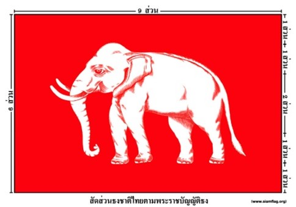
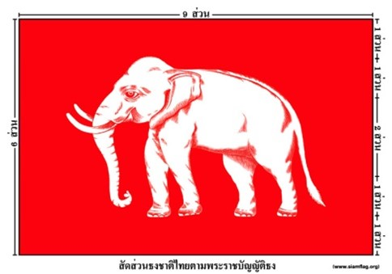

ประวัติศาสตร์ไทย
🚩 ในสมัยสมเด็จพระนารายณ์มหาราช แห่งกรุงศรีอยุธยา เมื่อเรือคนต่างชาติล่องเข้ามา เขาจะมีธรรมเนียมประเพณีการชักธงประเทศบนเรือ เพื่อแสดงสัญลักษณ์ว่า มาถึงแล้ว แต่ทางฝั่งไทย (หรืออยุธยาในตอนนั้น) ไม่มีธงเป็นสัญลักษณ์ จึงได้หยิบผ้าผืนสีแดงที่หาได้ใช้เป็นสัญลักษณ์แสดงต่อคนต่างชาติ และก็เริ่มใช้ธงผ้าสีแดง เป็นสัญลักษณ์ใบเรือ และป้อมประจำการ (แต่ยังไม่ใช่ธงประจำชาติ)ต่อมา เมื่อวันที่ ๓ กันยายน พ.ศ. ๒๒๒๓ เรือรบของฝรั่งเศสชื่อ เลอรโวตูร์ โดยมี มองซิเออร์ คอนูแอน เป็นนายเรือ ได้นำเรือเข้ามาถึงปากแม่น้ำเจ้าพระยา เพื่อเจริญพระราชไมตรีและการค้า นายเรือได้สอบถามทางกรุงศรีอยุธยาว่า ถ้าจะยิงสลุต (ยิงปืนให้ความเคารพ) ให้แก่สยาม เมื่อเรือผ่านป้อมวิไชเยนทร์ (ปัจจุบันคือป้อมวิชัยสิทธิ์) ตามประเพณีของชาวยุโรป จะเป็นการขัดข้องหรือไม่ สมเด็จพระนารายณ์ทรงอนุญาต และรับสั่งให้เจ้าเมืองบางกอก คือ ออกพระศักดิ์สงคราม ให้ทางป้อมยิง สลุตตอบด้วย และในการที่เรือรบฝรั่งเศลได้ยิงสลุตให้นั้น ทางป้อมก็ชักธงชาติขึ้น แต่ในห้วงเวลานั้นธงชาติสยามยังไม่มี จึงได้ชักธงชาติฮอลันดาขึ้นแทน แต่ฝรั่งเศสไม่ยอมยิงสลุต เพราะเห็นว่าไม่ใช่ธงของชาติสยาม จึงแจ้งให้ทราบว่า หากสยามประสงค์จะให้ฝรั่งเศสยิงสลุตให้ ก็เอาธงฮอลันดาลงเสีย แล้วชักธงอย่างหนึ่งอย่างใดขึ้นแทน เผอิญในสมัยนั้นธงสีแดงถือเป็นธงที่สยามใช้สำหรับเป็นธงนำทัพอยู่แล้ว สยามจึงนำธงแดงชักขึ้น จากนั้นฝรั่งเศสจึงยิงสลุตให้ ด้วยเหตุนี้สยามจึงถือเอาธงสีแดงเป็นธงชาติสยาม

ธงสีแดงเกลี้ยง
🚩 ในสมัยสมเด็จพระนารายณ์มหาราช แห่งกรุงศรีอยุธยา เมื่อเรือคนต่างชาติล่องเข้ามา เขาจะมีธรรมเนียมประเพณีการชักธงประเทศบนเรือ เพื่อแสดงสัญลักษณ์ว่า มาถึงแล้ว แต่ทางฝั่งไทย (หรืออยุธยาในตอนนั้น) ไม่มีธงเป็นสัญลักษณ์ จึงได้หยิบผ้าผืนสีแดงที่หาได้ใช้เป็นสัญลักษณ์แสดงต่อคนต่างชาติ และก็เริ่มใช้ธงผ้าสีแดง เป็นสัญลักษณ์ใบเรือ และป้อมประจำการ (แต่ยังไม่ใช่ธงประจำชาติ)ต่อมา เมื่อวันที่ ๓ กันยายน พ.ศ. ๒๒๒๓ เรือรบของฝรั่งเศสชื่อ เลอรโวตูร์ โดยมี มองซิเออร์ คอนูแอน เป็นนายเรือ ได้นำเรือเข้ามาถึงปากแม่น้ำเจ้าพระยา เพื่อเจริญพระราชไมตรีและการค้า นายเรือได้สอบถามทางกรุงศรีอยุธยาว่า ถ้าจะยิงสลุต (ยิงปืนให้ความเคารพ) ให้แก่สยาม เมื่อเรือผ่านป้อมวิไชเยนทร์ (ปัจจุบันคือป้อมวิชัยสิทธิ์) ตามประเพณีของชาวยุโรป จะเป็นการขัดข้องหรือไม่ สมเด็จพระนารายณ์ทรงอนุญาต และรับสั่งให้เจ้าเมืองบางกอก คือ ออกพระศักดิ์สงคราม ให้ทางป้อมยิง สลุตตอบด้วย และในการที่เรือรบฝรั่งเศลได้ยิงสลุตให้นั้น ทางป้อมก็ชักธงชาติขึ้น แต่ในห้วงเวลานั้นธงชาติสยามยังไม่มี จึงได้ชักธงชาติฮอลันดาขึ้นแทน แต่ฝรั่งเศสไม่ยอมยิงสลุต เพราะเห็นว่าไม่ใช่ธงของชาติสยาม จึงแจ้งให้ทราบว่า หากสยามประสงค์จะให้ฝรั่งเศสยิงสลุตให้ ก็เอาธงฮอลันดาลงเสีย แล้วชักธงอย่างหนึ่งอย่างใดขึ้นแทน เผอิญในสมัยนั้นธงสีแดงถือเป็นธงที่สยามใช้สำหรับเป็นธงนำทัพอยู่แล้ว สยามจึงนำธงแดงชักขึ้น จากนั้นฝรั่งเศสจึงยิงสลุตให้ ด้วยเหตุนี้สยามจึงถือเอาธงสีแดงเป็นธงชาติสยาม

ธงรูปช้างเผือกสีขาวอยู่ในวงจักรสีขาว
ขึ้นรัชสมัยของพระบาทสมเด็จพระพุทธเลิศหล้านภาลัย พ.ศ. ๒๓๖๐ - ๒๓๖๖ (รัชกาลที่ ๒) ประเทศอังกฤษได้เข้ามาตั้งสถานีการค้าขายอยู่ที่ประเทศสิงคโปร์ และพระองค์ท่านทรงพระกรุณาโปรดเกล้าฯ ให้สร้างเรือกำปั่นของหลวงขึ้น ๒ ลำเพื่อล่องค้าขายระหว่างสิงคโปร์และมาเก๊า โดยที่เรือหลวงทั้งสองลำดังกล่าวจะชักธงแดงตามธรรมเนียมที่ปฏิบัติกันมาตั้งแต่สมัยอยุธยา กระทั่งวันหนึ่งประเทศอังกฤษซึ่งเป็นเจ้าเมืองสิงคโปร์ได้บอกกับนายเรือหลวงของสยามให้มากราบบังคับทูลพระเจ้ากรุงสยามว่า ..."เรือเดินทะเลชาวมลายูที่ค้าขายกับสิงคโปร์ก็ชักธงแดงเหมือนกัน เพราะฉะนั้นจึงขอให้พระเจ้ากรุงสยามใช้ธงอย่างอื่นเสีย เพื่อจะได้จัดการรับรองเรือหลวงได้สะดวกและไม่สับสน"... และที่สำคัญในช่วงรัชกาลที่ ๒ นี้ พระองค์ทรงได้ช้างเผือกเอกมาสู่พระบารมีถึง ๓ ช้าง คือ พระเศวตกุญชร พระยาเศวตไอยรา และพระยาเศวตคชลักษณ์ ซึ่งถือเป็นพระเกียรติยศอย่างสูง จึงทรงพระกรุณาโปรดเกล้าฯ ให้ทำรูปช้างสีขาวยืนพื้นอยู่ในวงจักรสีขาวติดไว้กลางธงแดงอันมีความหมายว่า “พระเจ้าแผ่นดินผู้มีช้างเผือก” และธงรูปช้างเผือกสีขาวอยู่ในวงจักรสีขาวนี้ก็ใช้เฉพาะเรือหลวงเท่านั้น ส่วนเรือพ่อค้าไทยทั่วไปก็ยังคงใช้ธงแดงอยู่ตามเดิม โดยใช้ธงสยามแบบนี้จนถึงรัชกาลที่ ๓ ต่อมา พระบาทสมเด็จพระนั่งเกล้าเจ้าอยู่หัว รัชกาลที่ 3 ทรงตัดสินพระราชหฤทัยในการให้สามัญชนชาวสยามยุติการใช้ธงแดงเกลี้ยงที่ใช้ชักบนกำปั่นต่างๆ เนื่องจากสีแดงเกลี้ยงไม่สามารถระบุความเป็นชาติสยามได้ พระองค์ทรงนำธงช้างเผือกในวงจักรที่ใช้ชักบนกำปั่นหลวงมาปรับเปลี่ยนโดยการนำวงจักรออกแล้วขยายช้างเผือกให้เห็นเด่นชัดขึ้นเป็นเครื่องหมายสำคัญประจำเรือสามัญชนชาวสยามเมื่อต้องล่องไปค้าขายยังต่างประเทศ และธงช้างเผือกนี้ยังเป็นธงแรกที่ใช้บนแผ่นดิน
 

ธงแบบช้างเผือกยืนพื้น,ธงแบบช้างเผือกปล่อย
🚩 ครั้นขึ้นรัชกาลพระบาทสมเด็จพระจอมเกล้าเจ้าอยู่หัว (รัชกาลที่ ๔) สยามได้มีการทำหนังสือสัญญาเปิดการค้าขายกับชาวตะวันตกมากขึ้น ทำให้มีเรือสินค้าของประเทศต่างๆ ทั้งจากยุโรปและอเมริกาล่องเข้ามาค้าขายมากขึ้น พร้อมทั้งมีสถานกงสุลตั้งอยู่ในพระนคร ซึ่งชักธงชาติของประเทศตนเองขึ้นเป็นสำคัญ ดังนั้นจึงจำเป็นที่ประเทศสยามจะต้องมีธงชาติที่แน่นอน โดยให้คงไว้แต่รูปช้างเผือกอยู่กลางธงแดง แต่ทว่าให้ปรับขนาดช้างเผือกให้ใหญ่ขึ้น โดยในช่วงแรกเป็นแบบช้างเผือกยืนพื้น ต่อมาปรับรูปช้างเป็นแบบช้างเผือกปล่อย